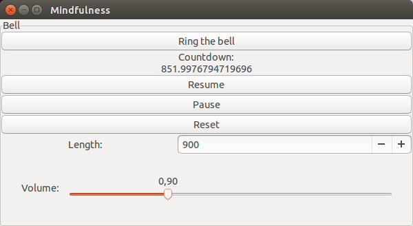

Focusing is important in all tasks and meditation is training in focusing. Meditation has been shown to directly increase the density of gray matter in the brain while creating happiness and peace. The program we describe here is designed to promote exercise in focused awareness by providing a cue that not only brings ones attention back to the practice but also offers a challenge of maintaining concentration during the countdown and catching the bell in awareness.

Let us analyze the source code bit by bit:
using Gtk.ShortNames
import AudioIO
The first two lines pull in two packages for use, with "using" shorthand notation is made available whereas with "import" the full package name has to be typed to access internal functions.
bellfile="ZenTempleBell.wav"
if ispath(bellfile)
import WAV
bell=WAV.wavread(bellfile)[1][:,1]
else
samplerate=44100
seconds=3
x=linspace(2pi/samplerate,seconds*2pi,seconds*samplerate)
amp=0.3
d=linspace(1,0,seconds*samplerate)
A=444
r=(528/444)^(1/3)
bell=cos(A.*x).*d.*amp.+cos(A*r^3.*x).*d.*amp.+cos(A*r^5.*x).*d.*amp
end
Here we load the bell sound, if the file is not present an A chord is manually constructed. Now a note on the volatile nature of using a language under heavy development, first the WAV package produced errors which were resolved by updating the packages, however when the Gtk package was updated it in turn produced errors, updating to a Julia version released on this very day produced a waterfall of deprecation warnings and did not fix the errors, however it did introduce backwards incompatibility when the Gtk package was rolled back to version 7 and this issue in turn was resolved by using a few months old version of Julia. The situation could probably have progressed smoother with the stable Julia v0.3, the use of which indeed being the official recommendation.
type Countdown
active::Bool
updated
remaining
end
c=Countdown(true,time(),900)
This type stores information about the countdown, a dictionary can also be used, or variables attached to the Gtk framework such as the total countdown length.
#Widgets
w=@Window("Mindfulness", 600, 300)
frame=@Frame("Bell"); push!(w,frame)
bb=@Box(:v); push!(frame,bb)
b=@Button("Ring the bell"); push!(bb,b)
lcd=@Label("Countdown:"); push!(bb,lcd)
cd=@Label("$(c.remaining)"); push!(bb,cd)
setproperty!(cd,:tooltip_text,"Catch me if you can!")
resume=@Button("Resume"); push!(bb,resume)
pause=@Button("Pause"); push!(bb,pause)
reset=@Button("Reset"); push!(bb,reset)
Here we define our window and its contents. Notice the ease with which we can set tooltip texts and the range for our spin button below, a few characters instead of having to deal with the cumbersome adjustments.
hbox=@Box(:h); push!(bb,hbox)
len=@Label("Length:"); push!(hbox,len)
sb=@SpinButton(1:999999999); push!(hbox,sb)
setproperty!(sb,:value,c.remaining)
setproperty!(hbox,:expand,len,true)
setproperty!(hbox,:expand,sb,true)
setproperty!(hbox,:spacing,10)
showall(w)
By putting a box in the box we can perform some formatting, an alternative option is to use to grid container. The final line makes the contents of the window visible.
signal_connect(b, "clicked") do widget
AudioIO.play(bell)
end
We need to connect our buttons to functions.
function downcount()
c.remaining=c.remaining-(time()-c.updated)
if c.remaining<=0
AudioIO.play(bell)
c.remaining=getproperty(sb,:value,Int64)
end
setproperty!(cd,:label,"$(c.remaining)")
c.updated=time()
sleep(1)
end
signal_connect(resume, "clicked") do widget
if !c.active
c.updated=time()
c.active=true
@async while c.active;downcount();end
end
end
This button activates the countdown as defined in downcount.
signal_connect(pause, "clicked") do widget
c.active=false
end
signal_connect(reset, "clicked") do widget
c.remaining=getproperty(sb,:value,Int64)
setproperty!(cd,:label,"$(c.remaining)")
end
These ones pause and reset the countdown.
@async while c.active;downcount();end
if !isinteractive() #this will evaluate to true even if the script is loaded with -L
condition=Condition()
signal_connect(w, :destroy) do widget
notify(condition)
end
wait(condition)
c.active=false
end
Now the final part is to make the program run until the user closes the main window, the Julia community values separation into importable and runnable code as opposed to solutions for mixing the two found in other languages, so make your files as reusable as possible and make a test driver that also serves as documentation.
Next we may want to arrange for this bell to automatically activate any time we start the computer, this can be achieved in Ubuntu by adding the following line to the file .gnomerc (and creating it if it isn't already there) in the home directory:
julia ~/juliafiles/mindfulness.jl &
Now however the script is not invoked from the same folder as where the bell sound is located, so we need to make the following modification for the bell to be found:
bellfile=dirname(Base.source_path())*"/ZenTempleBell.wav"
We can also add a volume bar to the widgets:
hbox2=@Box(:h); push!(bb,hbox2)
vol=@Label("Volume:"); push!(hbox2,vol)
volume=@Scale(false,0:0.05:3); push!(hbox2,volume)
voladj = @Adjustment(volume)
setproperty!(voladj,:value,1)
setproperty!(hbox2,:expand,volume,true)
setproperty!(hbox2,:margin,30)
setproperty!(hbox2,:spacing,15)
Then modify all sounds of the bell to:
AudioIO.play(getproperty(voladj,:value,Float64).*bell)